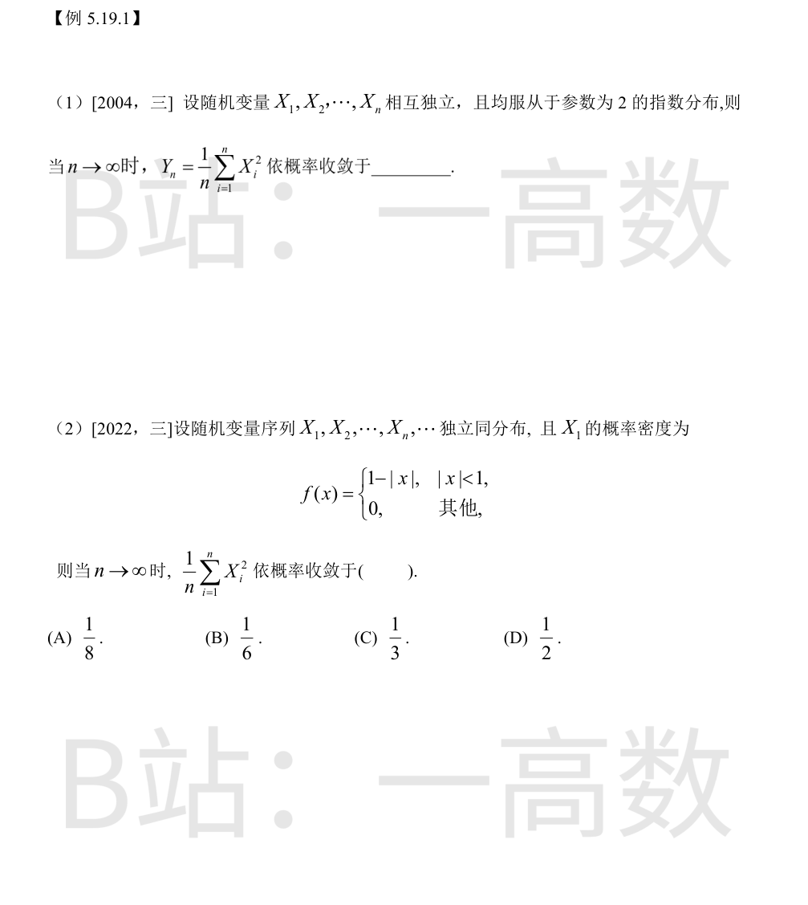

独立同分布随机变量序列，若 $E(X_1^2)$ 存在，则由辛钦大数定律
$$Y_n=\frac{1}{n}\sum_{i=1}^n X_i^2 \xrightarrow{P} E(X_1^2).$$
对参数 λ=2 的指数分布：$E(X_1)=\dfrac{1}{2}$，$D(X_1)=\dfrac{1}{\lambda^2}=\dfrac{1}{4}$，故
$$E(X_1^2)=D(X_1)+\left[E(X_1)\right]^2=\frac{1}{4}+\frac{1}{4}=\frac{1}{2}.$$
即 $Y_n$ 依概率收敛于 $\dfrac{1}{2}$。
由辛钦大数定律，$\dfrac{1}{n}\sum_{i=1}^n X_i^2 \xrightarrow{P} E(X_1^2)$（$X_1^2$ 有界，各阶矩存在）。
$$E(X_1^2)=\int_{-1}^{1} x^2(1-|x|)\,dx=2\int_0^1 (x^2-x^3)\,dx=2\left(\frac{1}{3}-\frac{1}{4}\right)=\frac{1}{6}.$$
选 (B)。